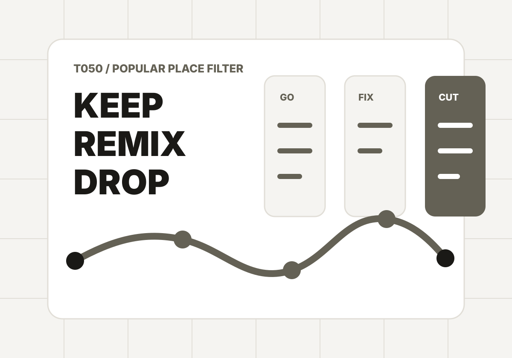

T050 / Popular place filter
不是所有「必去」，都值得進你的行程。
熱門景點最貴的不是門票，而是排隊、轉車、繞路和心理期待。把候選景點放進來，工具會幫你分成保留、改造、刪掉三類，救回旅行時間。
Trip constraints
先定義今天有多珍貴
Hit list
候選熱門景點
每個景點都要證明自己值得進行程。高人氣不是通行證，獨特性和你的期待才是。
Result
先放入候選景點，再把必去清單過濾一次。
結果會產生保留 / 改造 / 刪掉決策、節省時間、路線重排規則、分享文與 ChillOut prompt。